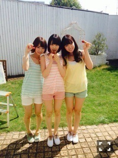
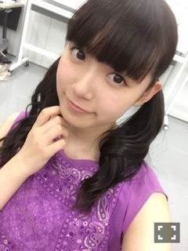

| 2015/07 24 Fri | ひめたん-0o0-その559 |
12thシングル「太陽ノック」
いよいよ発売になりました！！
アンダー曲はtype-C
愛未とのペアPVはtype-A
ブックレットはセブンイレブン盤
を手に取っていただけたら
私を見つけてもらえるかなと
思います(＊´ω`＊)これ言うの遅かったね。
新曲の感想、MV・PVの感想、
聞かせてくださーい♪
「別れ際、もっと好きになる」
とっても好き。なんか切ない曲好き。
歌詞は私たちにはちょっと
背伸びした感じもするけれど
こんな夏曲もアリだなって思う！
パフォーマンスもまたキレイなので
ぜひライブで観ていただきたいな。
24日はいろいろありました
まず週刊ヤングアニマルの発売日！
アンダーメンバー大集合して
16Pも掲載していただいてます！
というか表紙になってます！
ありがたやありがたや( ´•̥ω•̥` )
この3人の並びは新鮮かな？
全然タイプの違う3人ですが
意外と同い年だったりします。

そして同じく本日発売のsamuraiELO。
秋元、万理華、衛藤、堀、若月、中元
6人で撮っていただきました
メンズのTシャツを着てるので
男の子もおにゃのこも
メンバーと同じものゲットしたら楽しそう。
ファッションや新曲について
語ったりもしています(´｡•ω•｡`)

続いて、
ミュージックステーションに
出演しました！

さゆのアンダーで出演しました！
2人分頑張りました！
私にとっては初のMステ、
初の「太陽ノック」パフォーマンス、
いかがだったでしょうか？
みてくれたかな？
びーむもちゃんとしたよ♡♡
緊張した～。感想聞かせてください。
いつか、アンダーでなく
自分自身がオリジナルメンバーとして
出演できる日がきたらいいな。
頑張ります！！
もうひとつ今日のこと。
新番組「乃木坂ゴルフ倶楽部」
楽天SHOW TIMEから
配信スタートしました( ˆωˆ )
ゴルフの魅力を伝えていけたらなと
思っているので
ゴルフが好きな人も、やったことない人も
ぜひ観ていただきたいです♪
第一回のゲストはTIMさんです！
最後にラジオのお話。
水曜日の「レコメン！」ゲストコーナーに
井上・新内・中元で出演しました～
聞いてくださったみなさんありがとう( ˇωˇ )
乃木ののの姉妹番組として
CDをリリースするたびにメンバーが
おじゃましておりますが
今回の3人の組み合わせは新鮮だったかも！
30分間あっという間だったなあ
毎度恒例のパジャマのお話もできたり
レコメンファイルもゲットできたし
楽しかった！また遊び行きたい！
出演前にスタッフさんたちと
ラジオ談義に花を咲かせていました。
報告おしまい！
たくさん報告できるなんて
ありがたいことです( ´•̥ω•̥` )
最近ずっとお仕事してたいって思ってるの。
さて明日明後日は京都で
セブンイレブンライブ、全握、個握！
みなさんと会えるイベントは
久々なので楽しみにしてました！
12th初めてのライブ&握手会～＊
２つライブがありますが
全然セットリスト違うので
楽しいと思うなーo(^▽^)o
全握の握手はまいちゅんとペア！
第19レーンで待ってます♡
まいちゅんとはレコメンの帰り道に
ラジオ話の延長戦を繰り広げたんだが
まーあ盛り上がったこと。笑
個握は聞きたいことたくさんある！
じょしらく、12thシングル、
雑誌のことも、ラジオのことも、
テレビのことも！他にもいっぱいある！
たくさんお話しましょう(´｡•ω•｡`)
「猫の目パンデミック」

みなさんパンデミックって言葉、知ってる？
(＊´・ω・＊)
コメント(668)
2015/07/24 23:36